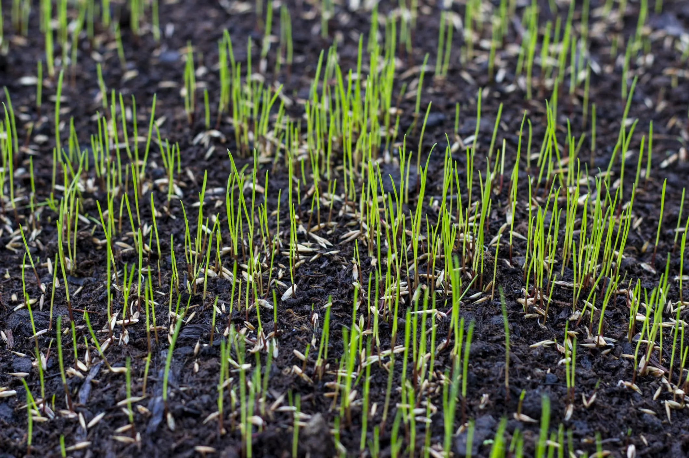
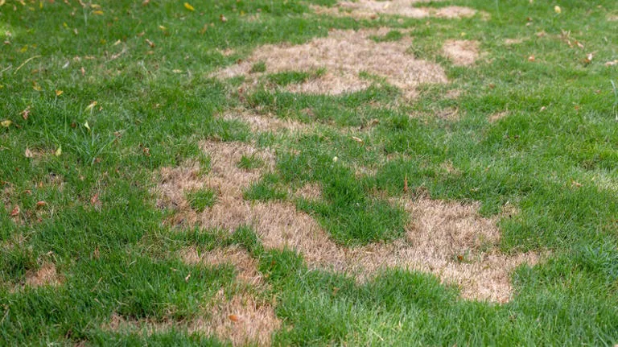
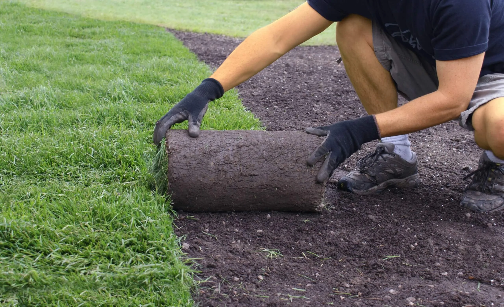

Lawn Restoration Services in Ottawa
Professional Services
Bring Your Lawn Back to Life
Ottawa winters are hard on lawns. Heavy snowpack, freeze-thaw cycles, and spring clay soil compaction can leave your yard thin, patchy, and struggling. ProGrow Gardening provides professional lawn restoration services across Nepean, Barrhaven, Kanata, and Manotick. We diagnose the root cause and build a plan to bring your lawn back to full health.
Questions about lawn care timing or fertilizing? See our Ottawa Gardening FAQ.

Soil and Seeding
Good lawns start with good soil. Our Soil and Seeding service repairs depleted ground through targeted amendments, aeration, and premium grass seed. We set up the right conditions for strong germination and root development so your lawn comes back thick and stays that way.
Soil testing and nutrient balancing
Core aeration for improved seed penetration
Premium seed blends tailored to your yard
Ideal for full-lawn restoration or enhancement
Patchy Lawn Restoration
Uneven coverage is one of the most common lawn problems in Ottawa. Our Patchy Lawn Restoration service targets problem areas with the right combination of topdressing, overseeding, and spot treatments to bring back consistent, healthy growth across your entire yard.
Overseeding for density
Targeted soil enrichment
Spot dethatching and aeration
Fast recovery of patchy or worn zones


Sod Installation
For results you can see right away, sod is the best option. We remove existing turf, prepare the soil properly, and install fresh, locally grown sod for a clean, established-looking lawn in a single day.
Full lawn replacement or partial installation
Professional soil grading and prep
Locally sourced, high-quality sod
Instant curb appeal with minimal downtime
Ready to Transform Your Outdoor Space?
Fill out the form below to receive a free quote for our services.